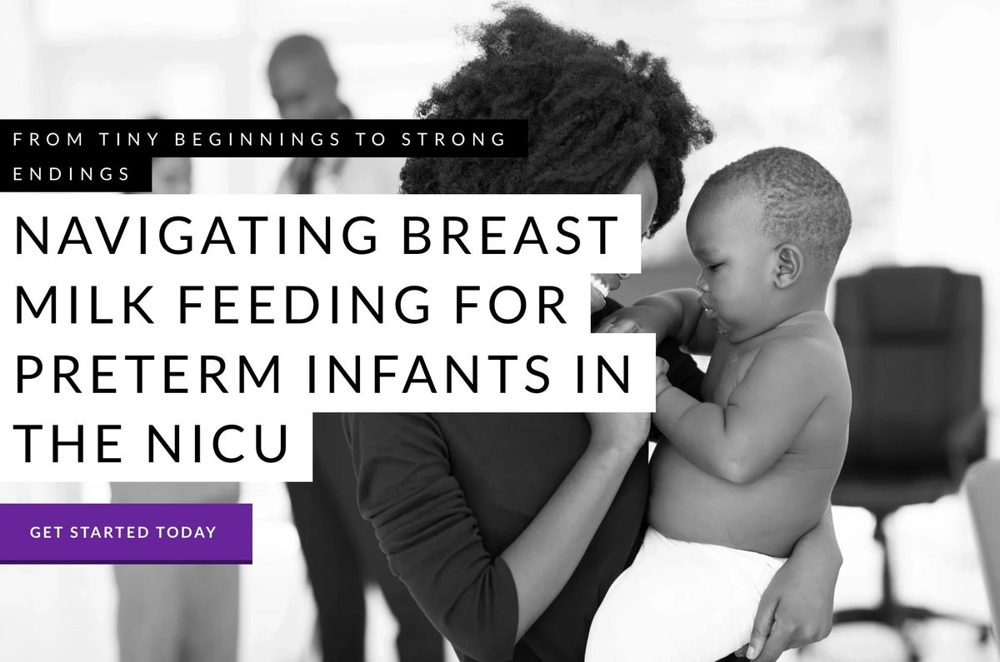
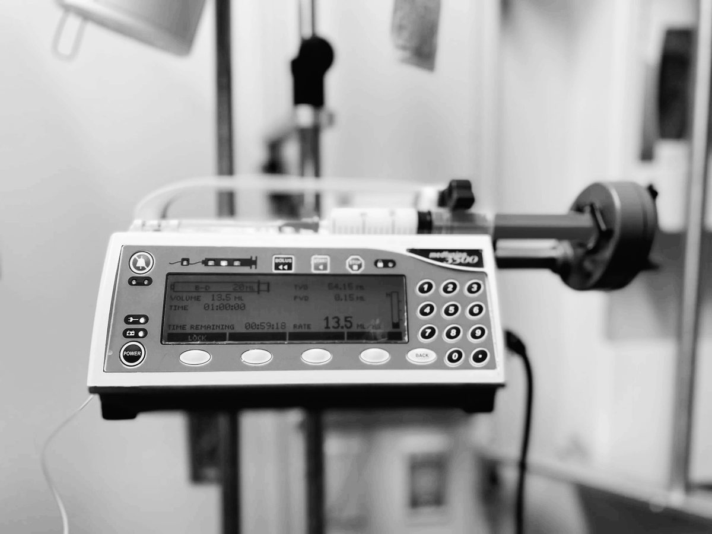
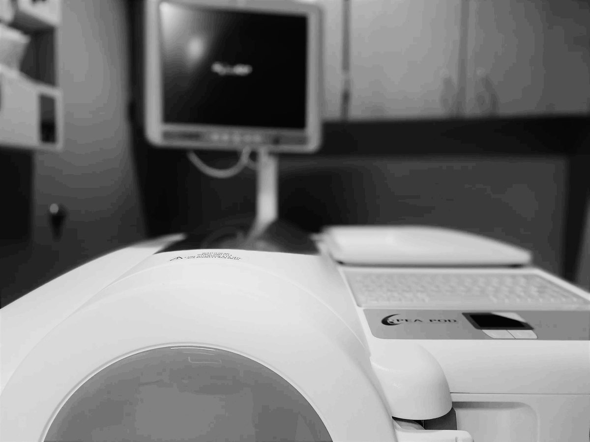

Breastmilk
Breastmilk is the most important gift that you can give your premature infant. Your fresh milk is best for your baby.
Find out more about breastmilk
Facilitating breastfeeding, especially among preterm infants, is key to improve their overall health and well-being.
Find out morePremature infants often receive a combination of breast milk feeds and IV nutrition during the first days after birth.
Breastmilk is the most important gift that you can give your premature infant. Your fresh milk is best for your baby.
Find out more about breastmilk
Donor human milk is a good bridge when a mother is actively pumping and trying to increase her own milk supply.
Find out more about donor milk
Infant body composition is an outcome of growth associated with long-term health of premature babies.
Find out more about body composition measurementsHuman milk diets can jump-start an interaction between the immune system and the gut microbiome of your baby.
Find out more about the gut microbiomeMost frequently asked questions, so everybody benefits.
Find out more about frequently asked questionsHelpful books and websites
Find out more about resources for parents of preterm infantsLearning materials for NICU staff and families
Find out more about breastfeeding and pumping support